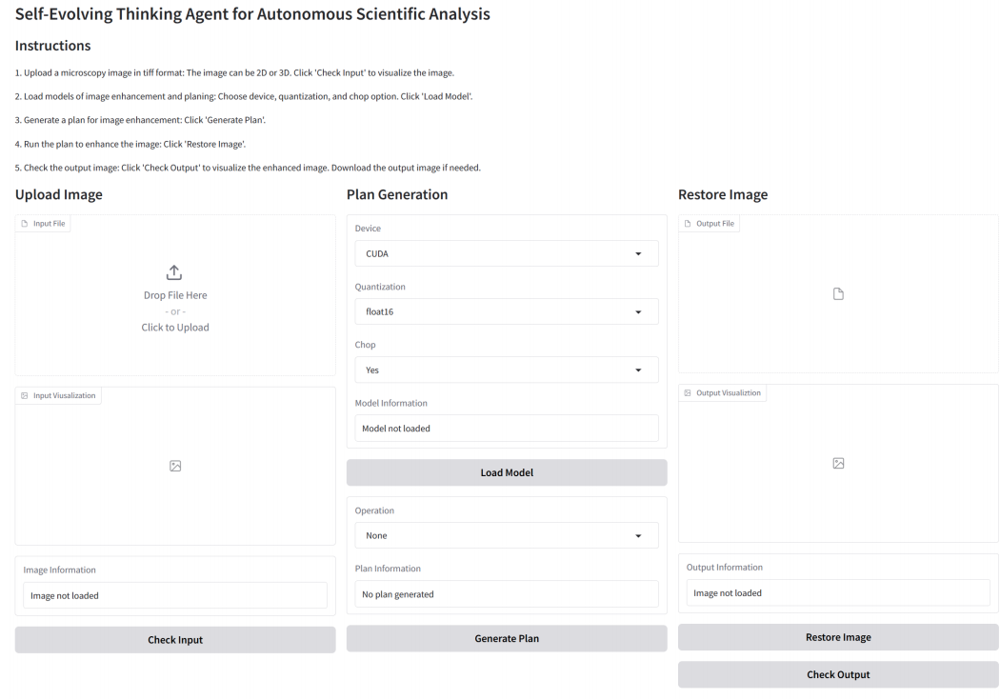
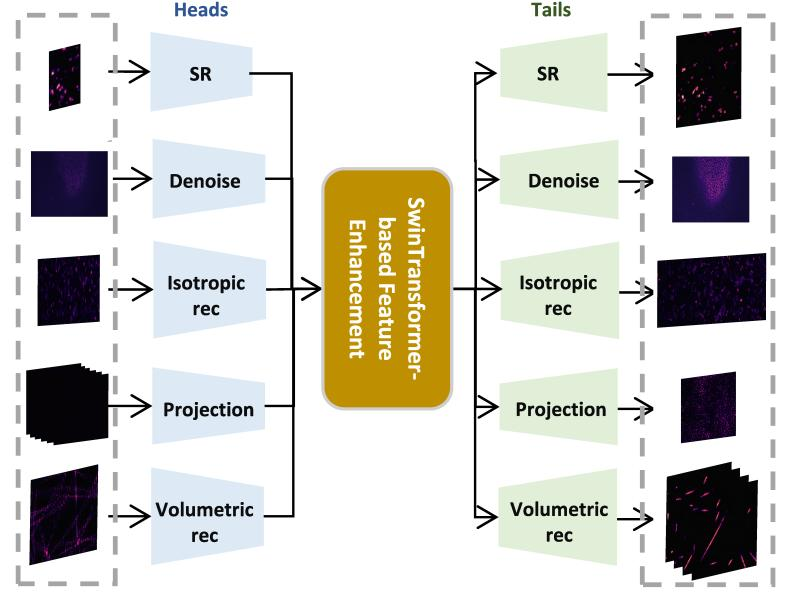
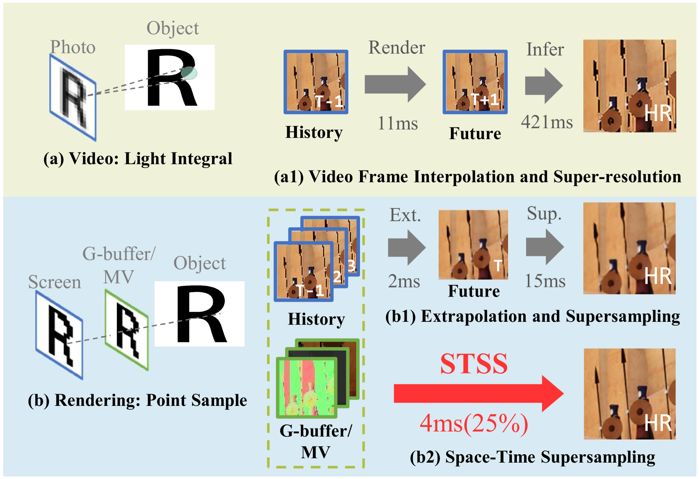

Agents for science · Preprint, 2025
FMIRAgent
FMIRAgent connects visual perception, reasoning, and restoration strategies for microscopy.
Explore the codeRuian He 何瑞安
Researcher & engineerI am an Algorithm Engineer at Alibaba Cloud and a Postdoctoral Researcher at Shanghai Jiao Tong University. I am currently advised by Prof. Linfeng Zhang and Dr. Xiantao Zhang.
I received my Ph.D. in Computer Science from Fudan University in June 2026, advised by Prof. Bo Yan, and my bachelor's degree in Computer Science from Fudan in 2021.
My research interests span computer vision, multimodal language models, and agentic AI.
Alibaba CloudAlgorithm Engineer · Since October
Shanghai Jiao Tong UniversityPostdoctoral Researcher · Since October
Alibaba CloudIntern
Microsoft Research AsiaResearch Intern · Shanghai System and Engineering Group
Chain-of-thought reasoning for multimodal language models
Fudan UniversityPh.D. in Computer Science · September 2021 – June 2026
Fudan UniversityBachelor's degree in Computer Science

Agents for science · Preprint, 2025
FMIRAgent connects visual perception, reasoning, and restoration strategies for microscopy.
Explore the code
Scientific imaging · Nature Methods, 2024
UniFMIR uses pretraining to address a range of fluorescence microscopy image restoration tasks.
Read the paper
Efficient visual computing · AAAI, 2024
Space-time supersampling brings frame extrapolation and supersampling into one low-latency framework.
Read the paper{{PAPER_COUNT}} papers · * Equal contribution.
No published papers match your search.
No preprints match your search.